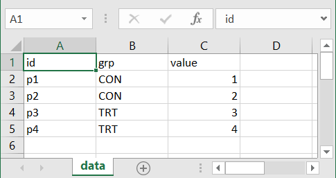
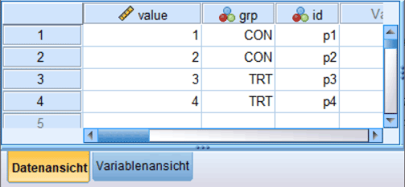

df <- readr::read_delim(
file = 'data/example_01.txt',
delim = '\t'
)5 Einfache Datenbearbeitung und Visualisierung in R
Im Folgenden werden wir verschiedene Funktion zur Bearbeitung und Visualisierung von Daten kennenlernen. Die verwendeten Funktionen sind alle in einer großen Sammlung von Funktionen dem tidyverse zugeordnet. Pakete aus dem tidyverse verfolgen alle eine einheitliche Syntax und Herangehensweise an die Datenverarbeitung. Daneben verfügen sie über eine ausgezeichnete Dokumentation. Daher werden die jeweiligen Funktionen hier nur kurz angeschnitten. Weitergehende Informationen und vor allem jede Menge Beispielanwendungen findet ihr in der tidyervers Dokumention.
5.1 Daten in R einlesen
Daten in R werden mittels spezieller Funktionen eingelesen, die jeweils auf bestimmte Datentypen spezialisiert sind. Drei Pakete sind dabei für die allermeisten ausreichend. Die Pakete sind readr, readxl und haven.
5.1.1 readr
Im Paket readr sind eine Reihe von Funktionen enthalten um rechteckige Textdateien einzulesen. Die allgemeineste Funktion ist read_delim() bei der angegeben werden muss, welche Trennzeichen (engl. delimiter) zwischen den einzelnen Spalteneinträgen steht. Seien z.B. die folgenden Daten in einer Datei example_01.txt in dem Ordner data gespeichert.
id grp value
p1 CON 1
p2 CON 2
p3 TRT 3
p4 TRT 4
Das Trennzeichen zwischen den Eintragen ist ein TAB. Die Datei können wir mittels des folgenden Befehls einlesen.
Mit der Parameter \t spezifizieren das verwendete Trennzeichen. read_delim() verwendet eine Reihe von Heuristiken um den jeweiligen Datentyp der Spalten zu bestimmen. Der Rückgabewert von read_delim() ist ein tibble() mit den Daten, das wir der Variable df in dem Fall zuweisen.
df# A tibble: 4 × 3
id grp value
<chr> <chr> <dbl>
1 p1 CON 1
2 p2 CON 2
3 p3 TRT 3
4 p4 TRT 4Im Beispiel sind die ersten beiden Spalten als Zeichenketten (<char>) erkannt worden, während die dritte Spalte als Zahl (<dbl>) erkannt wurde. Manchmal funktionieren die Regeln nicht korrekt. In dem Falle können mit dem Parameter col_types die Spaltentypen direkt angegeben werden. Wenn keine Kopfzeile in den Daten vorhanden ist, kann diese über den Parameter col_names spezifiziert werden. Mit skip können Zeilen zu Beginn der Datei übersprungen werden.
Zum Beispiel wenn wir die Spaltennamen anders haben wollen, können wir die erste Zeile beim einlesen überspringen und andere Spaltennamen angeben.
readr::read_delim(
file = 'data/example_01.txt',
delim = '\t',
skip = 1,
col_names = c('ID', 'Gruppe','Wert'),
col_types = 'ccd'
)# A tibble: 4 × 3
ID Gruppe Wert
<chr> <chr> <dbl>
1 p1 CON 1
2 p2 CON 2
3 p3 TRT 3
4 p4 TRT 4Wie immer, wenn ihr das Paket readr mit library() geladen habt, ist die Qualifizierung readr:: nicht notwendig um die Funktion zu verwenden. Die weiteren Funktionen in readr wie read_csv, read_tsv usw. sind in den meisten Fällen Spezialversionen von read_delim bei denen der Parameter delim schon voreingestellt ist. Schaut euch etwas in der Dokumentation um einen Überblick über die verschiedenen Varianten zu bekommen.
5.1.2 readxl
Die gleichen Daten in einer Excel-Datei können wir mit der Funktion read_xlsx() aus dem Paket readxl in R laden. Wenn die Daten die folgende Form hat:

Die Daten können mit dem folgenden Befehl dann geladen werden.
df <- readxl::read_xlsx('data/example_01.xlsx',
sheet = 'data',
range = 'A1:C5')
df# A tibble: 4 × 3
id grp value
<chr> <chr> <dbl>
1 p1 CON 1
2 p2 CON 2
3 p3 TRT 3
4 p4 TRT 45.1.3 haven
Das gleiche Prinzip nochmal bei SPSS-Dateien (siehe ?fig-r-bascis-spss).

Hier kann die Funktion read_sav() aus dem Paket haven.
df <- haven::read_sav('data/example_01.sav')
df# A tibble: 4 × 3
value grp id
<dbl> <dbl+lbl> <dbl+lbl>
1 1 1 [CON] 1 [p1]
2 2 1 [CON] 2 [p2]
3 3 2 [TRT] 3 [p3]
4 4 2 [TRT] 4 [p4] 5.2 Daten in R prozessieren mit tidyverse()
5.2.1 Der Pipe operator |>
In R gibt es einen sogenannten pipe-operator |> mit dem Rückgabe aus einer Funktion als das erste Argument einer nachfolgenden Funktion übergeben werden können. Dies ermöglicht es Code zu schreiben der sich wie das gesprochene Wort liest. Schauen wir uns ein einfaches Beispiel an. Wir wollen den Mittelwert eines Zahlenvektors berechnen und anschließend das Ergebnis auf die zweite Nachkommastelle runden. Normalerweise würden wir das wie folgt formulieren wenn wir keine Zwischenvariablen definieren wollen.
vec <- c(1, 7, 3, -5.22, 5, 6.3)
round(mean(vec), 2)[1] 2.85D.h. wir haben ein Schachtelung der Funktionen. Die mean() Funktion ist innerhalb der round() Funktion geschachtelt bzw. der Rückgabewert von mean() wird als erstes Argument an round() übergeben. Schauen wir uns nun an, wie wir das gleiche Programm mit dem pipe-operator durchführen würden.
vec |> mean() |> round(2)[1] 2.85Was ist hier passiert. Die erste pipe |> übergibt ihr links stehendes Argument vec and das erste Argument der rechts stehenden mean(). mean() ist jetzt happy und berechnet den Mittelwert des Vektors. Jetzt kommt das die zweite pipe und nimmt wieder das linke Argument, das ist jetzt der berechnete Mittelwert, und übergibt diesen an das erste Argument von round(). Wenn ihr euch die Hilfe von round() anschaut, dann seht ihr, dass dies der zu rundende Wert ist. Was macht jetzt aber die 2 in round(2). Nun, |> stellt den links stehenden Wert an die erste Stelle der rechts stehenden Funktion, dadurch rutsch die 2 an die zweite Argumentenstelle in round() und bestimmt somit die Anzahl der zu runden Stellen. Keine Sorge, mit etwas Übung geht euch |> in Fleisch und Blut über.
Der Vorteil ist des pipe-Operators ist, dass ihr das Program einfach von links nach rechts lesen könnt. Nimm vec, stecke es in mean() und stecke das was rauskommt in round(2). Bei dem ursprünglichen Programm musstet ihr euch von innen nach außen arbeiten und dabei immer im Blick behalten auf welcher Stufe ihr seid um die Parameterzuordnung richtig interpretieren zu können.
Noch ein Beispiel, wir wollen den Mittelwert auf den Absolutwerten des Vektors berechnen. Nach der Standardmethode.
round(mean(abs(vec)), 2)[1] 4.59Mit dem pipe-Operator
vec |> abs() |> mean() |> round(2)[1] 4.59Der pipe-Operator |> ist so alltäglich, dass ihr in RStudio einen short-cut für ihn habt STRG+SHIFT+m.
Neben dem Grund das |> ziemlich praktisch ist, haben ihn wir hier eingeführt, weil er Umgang mit Datenprozessierung im Zusammenhang mit tidyverse praktisch unabkömmlich ist. Die dahinterliegende Idee ist tatsächlich schon relativ lange bekannt in der Informatik (siehe kernigham1984?). Anstatt große, komplizierte Funktionen zu schreiben die eine Vielzahl von Argumenten haben und mehrere unterschiedliche Aufgaben erledigen, werden lieber viele kleine, spezialisierte Programmer erstellt. Die spezialisierten Programme können dann zusamengesetzt werden um komplizierte Aufgaben zu erfüllen. Der pipe-operator ist dabei zentral für diese Idee, da er es ermöglicht die spezialisierten, kleinen Programmen einfach aneinander zu hängen. Ähnlich wie zum Beispiel bei einen Kinderwasserspielzeug mit Rohren, Schaufeln, Filtern usw..
Um die Daten optimal mit dem tidyverse verarbeiten zu können, sollten die Daten im tibble() eine bestimmt Struktur haben.
Dabei immer daran denken, wollen wir das Ergebnis einer pipe weiterverwenden, müssen wir das Ergebnis auch wieder eine Variable zuweisen.
abs_mean_2 <- vec |> abs() |> mean() |> round(2)
abs_mean_2[1] 4.595.2.2 tidy-Data
Zu tidy-Data gibt es in der einfachsten Form nur drei Regeln.
- Jede Spalte ist eine Variable
- Jede Zeile ist eine Beobachtung
- Jeder Zelle ist ein einzelner Eintrag
Schauen wir uns wieder ein einfaches, fiktives Beispiel mit Sprunghöhen an.
df <- tibble(
time = rep(c('pre','post'), 4),
gender = rep(c('m','f'), each=4),
age = rep(round(runif(4, 20, 40)),each=2),
cmj = round(rnorm(8, c(25,20), 2), 1)
)
df# A tibble: 8 × 4
time gender age cmj
<chr> <chr> <dbl> <dbl>
1 pre m 36 20.8
2 post m 36 19.5
3 pre m 29 27.2
4 post m 29 22.5
5 pre f 32 27.8
6 post f 32 21.6
7 pre f 27 27.6
8 post f 27 22.8Wir haben vier Spalten, time, gender, age und cmj die jeweils eine Variable darstellen. In jeder Zeile ist eine Beobachtung eine Sprunghöhe cmj einer Person eines Alters age und gender zu einem bestimmten Zeitpunkt time. Schaut also tidy aus.
Diese Darstellung ist aber wahrscheinlich unterschiedlich zu derjenigen wie ihr solche Daten schon öfter gesehen habt. Wahrscheinlich nämlich eher so.
# A tibble: 4 × 4
gender age pre post
<chr> <dbl> <dbl> <dbl>
1 m 36 20.8 19.5
2 m 29 27.2 22.5
3 f 32 27.8 21.6
4 f 27 27.6 22.8Diese Darstellung ist zwar kompakter aber entspricht nicht mehr den tidy-Anforderungen, da wir nun nicht mehr nur eine Beobachtung pro Zeile haben. Wir haben für jede Person die Sprunghöhe zu zwei Zeitpunkten in einer Zeile. Die Daten sind in dieser Darstellung also untidy. Die tidy-Version ist etwas länger und enthält redundante Informationen aber wir werden im Folgenden sehen, dass diese Darstellung in der Verarbeitung zahlreiche Vorteile hat. Dazu werden wir auch Funktionen kennenlernen mit denen wir zwischen diesen beiden Formaten hin- und herwechseln können. Die tidy-Darstellung wird als long-Format bezeichnet, während die untidy-Darstellung als wide-Format bezeichnet wird.
5.2.3 filter()
Lernen wir jezt unseren ersten tidyverse() Befehl zur Datenmanipulation kennen. Die Befehle sind immer als Verben bezeichnet und die Regel ist, was im Namen draufsteht ist auch in der Packung drin. Der Befehl filter filtered somit die Daten. Dazu wir eine einfache Regel mittels der Vergleichsoperatoren angegeben. Wollen wir beispielsweise auf `gender == ‘f’ filtern, benutzen wir:
df |> filter(gender == 'f')# A tibble: 4 × 4
time gender age cmj
<chr> <chr> <dbl> <dbl>
1 pre f 32 27.8
2 post f 32 21.6
3 pre f 27 27.6
4 post f 27 22.8Oder auf das Alter age < 30:
df |> filter(age < 30)# A tibble: 4 × 4
time gender age cmj
<chr> <chr> <dbl> <dbl>
1 pre m 29 27.2
2 post m 29 22.5
3 pre f 27 27.6
4 post f 27 22.8Wir können auch mehrere Filteranweisungen zusammensetzen.
df |> filter(age < 25, gender == 'f')# A tibble: 0 × 4
# ℹ 4 variables: time <chr>, gender <chr>, age <dbl>, cmj <dbl>In diesem Sinne geht es jetzt immer weiter mit den Befehlen im tidyverse.
5.2.4 select()
Mit select() können wir einzelne Variablen aus einem tibble() auswählen.
df |> select(time, gender)# A tibble: 8 × 2
time gender
<chr> <chr>
1 pre m
2 post m
3 pre m
4 post m
5 pre f
6 post f
7 pre f
8 post f oder mit einem - ausschließen.
df |> select(-gender)# A tibble: 8 × 3
time age cmj
<chr> <dbl> <dbl>
1 pre 36 20.8
2 post 36 19.5
3 pre 29 27.2
4 post 29 22.5
5 pre 32 27.8
6 post 32 21.6
7 pre 27 27.6
8 post 27 22.85.2.5 mutate()
5.2.6 summarize()
5.2.7 group_by()
5.2.8 ungroup()
5.2.9 separate()
5.2.10 pivot_wider()
5.2.11 pivot_longer()
5.2.12 left_join()
Zusammenfassend ist das hier nur eine schnelle Übersicht über die möglichen Befehle gewesen. Eine exzellente Quelle ist das Buch R for Data Science Wickham, Çetinkaya-Rundel, und Grolemund (2023) das ihr auch online findet.
5.3 Daten in R visualisieren mit ggplot()
df <- tibble(
dv = 1:8,
iv = 11:18,
group = rep(c('a','b'), 4),
team = rep(c('Nuggets','Lakers'), each=4)
)